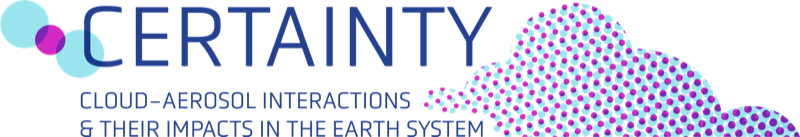

Coordinator Ongoing

Cloud-aERosol inTeractions & their impActs IN The earth sYstem
How aerosol–cloud–radiation interactions control and modify weather extremes and climate change remains one of the largest uncertainties in climate science. CERTAINTY delivers the knowledge and models that provide improved confidence and representation of the role of cloud–aerosol–radiation interactions in climate and weather, enabling better understanding and prediction of extreme events and supporting climate mitigation and adaptation planning.
Horizon Europe (grant agreement no. 101137680) · 18 partners in 10 countries · Scientific coordinator: Harri Kokkola (FMI)
Scientific Coordinator 2021–2026 · Concluded
Climate Relevant interactions and feedbacks: the key role of sea ice and Snow in the polar and global climate system
CRiceS brought together scientists from across Europe and beyond to understand how the polar regions, including sea ice and snow, interact with the atmosphere and ocean, and why this matters for polar and global climate. The project improved how climate models represent polar processes and feedbacks, deepened understanding of how Arctic change affects the rest of the planet, and strengthened connections between field measurements and climate modelling. All outputs (publications, datasets and policy briefs) are openly available.
EU Horizon 2020 (grant agreement no. 101003826) · Coordinator: Risto Makkonen (FMI)
Partner (IGE) 2023–2027 · Ongoing
Transfer through air bubble bursting of micro and nanoplastics from the ocean to the atmosphere
Atmospheric micro- and nanoplastics are a growing concern for climate and air quality. Bubbleplast tests the hypothesis that sea-to-air transfer of micro- and nanoplastics occurs via the bursting of air bubble plumes at the ocean surface, much like the formation of sea spray aerosols, and that these emissions are significant at the global scale, dispersing plastics to remote ocean regions and to the terrestrial and cryospheric parts of the Earth system. The project combines laboratory experiments on water-to-air particle transfer with improved, coupled ocean–atmosphere models of micro- and nanoplastic transport and cycling.
ANR programme Contaminants, écosystèmes et santé (grant no. ANR-23-CE34-0012) · Coordinator: Pascal Wong-Wah-Chung (LCE) · Partners: LCE, LOPS, GET, IGE, IPREM
Partner (IGE) 2020–2024 · Concluded
Emission, atmospheric transport and deposition of microplastics
The atmosphere plays an important, yet poorly quantified, role in global microplastic cycling, transporting microplastics to remote areas including the Arctic. ATMO-PLASTIC quantified atmospheric microplastics worldwide by analyzing aerosol filters from nine land-based observatories and four oceanographic expeditions, used ombrotrophic peat archives to reconstruct the history of plastic deposition since the 1950s, and developed Lagrangian and box models for source apportionment and closure of the global microplastic mass balance. The project underpinned findings such as the free-tropospheric long-range transport of microplastics observed at Pic du Midi and a mass budget model of global plastics cycling.
ANR programme Contaminants, écosystèmes et santé (grant no. ANR-20-CE34-0014) · Coordinator: Jeroen E. Sonke (GET) · Partners: GET, UGA-IGE, ECOLAB
Past projects
Integrative and Comprehensive Understanding on Polar Environments: EU H2020 project on pollutants, clouds and processes in the Arctic atmosphere.
The Cryosphere and Atmospheric CHemistry: an international activity fostering research on chemical exchange between the cryosphere and atmosphere.
Network on Climate and Aerosols: Addressing Key Uncertainties in Remote Canadian Environments. Arctic aerosol and air–snow interaction campaigns.
Pollution in the ARCtic System: French projects quantifying aerosols, halogens and mercury in the Arctic atmosphere and snowpack.
Arctic Climate Change, Economy and Society: impacts of Arctic energy and shipping activities on air quality and climate.
Ice, Climate, and Economics: Arctic Research on Change. EU FP7 project quantifying the global economic and societal costs of Arctic climate change.